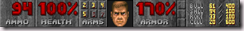

・・・というよくある映画のうたい文句風で、公開しました！メルヘンナイト！
最初に考えてたタイトル･･･なんか意味不明だったので変更。
こっちの方がしっくりくる。（過去のブログたどればあるかも･･･）
自分でも、よくここまでショボイゲームに無駄に根性入れてなぁと。
とりあえず、こういうオールドゲーってどれもこれも
ほとんどクリアー不可に近いものばっかりという自分の概念があったので
やさしめに作ってあります。 気合でクリアー可能です。だが、最後は難易度高め
てか、オールドゲーってただゲーセンからの移植とかが多いから、
難易度高めっていうのが多いのかもしれませんね。
まぁ、仲間ができるまで連打ゲーに近くなってしまったのは、反省･･･
ん～。やっぱり攻撃力を 剣＞魔法 にすればよかったか･･･？
ちゃんとしっかり作ったのですが、手抜きなところもあるかも・・・
そういえば、READ MEが、かなり急ぎ足で作ったので、
かなり書き忘れたことがたくさん(汗
しかし、旅行があって、更新できぬ･･･
ここに代わりに書き記しておこう。
ジャンル
一本道横スクロールアクションRPG
サポート
バグ修正・サポートなどはおこなっていません。これで完成です。
ただし、重大なバグを発見した場合、直ちに修正いたします。
また、このプログラムで起こした問題についての責任は、使用者が負うものとします。
環境によってはプログラムが動作しない場合があります。
配布・改造・ゲーム紹介について
再配布・改造は禁止です。
ゲームの紹介に関しては、大歓迎です。
こちらのアドレス
http://janekini.spaces.live.com/
にどうぞ。（連絡不要）
こんなものかな？
まぁ、基本的にどのPCでも動作はすると思いますけど、あまりにもロースペックだと動かないかも･･･
後で置き換えておこう。
そういえば、HPの％式は、コレが元ネタ
 （ぉ
FPSの金字塔ですな(´∀｀) FPSの原点といってもいいゲーム。名前は伏せときますw
ただ、昔はいろいろ問題があったっぽいですw 結構グロいし(爆)
もしかしたら、次回作は青い玉を取ったらHPが100％越えたり
輝いた玉を取ったらHP・ARMORが200％に・・・なんてないですなｗ
この作品、もうひとつのTonyu Systemの投稿に作品載せとくかな？
それでは、前回のブログ記事を見てる人は分かると思いますが、１４～１７日まで旅行行ってきます～ヾ(´∀｀)ノ
でも、行く前に、鼻血が出たり、PCの電源がいきなり切れたり･･･なんか先祖からの忠告ですか！？（ぇ
たぶん、ケータイで記事書くかもしれないです。
帰ってきたときのコメントどうなってるか楽しみだな～
{kind=link}